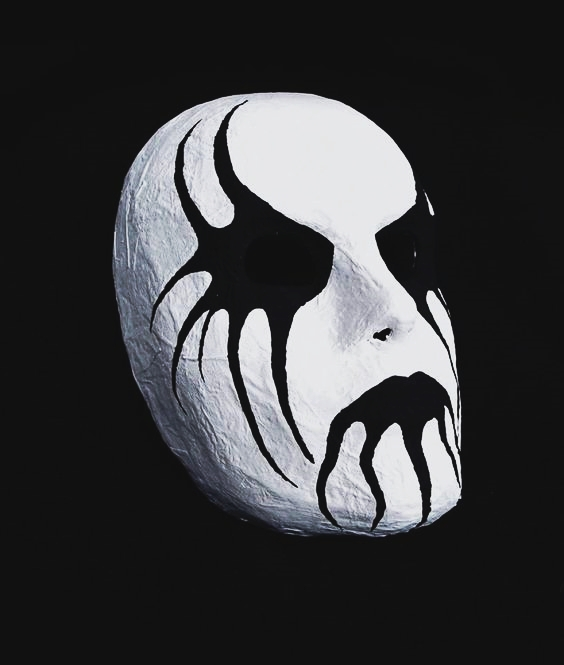

El black metal es un subgénero del heavy metal con características distintivas que lo diferencian de otros estilos.
A continuación, se destacan algunas de las características más prominentes del black metal:
Atmósfera Oscura y Melódica: El black metal tiende a enfocarse en la creación de
atmósferas oscuras y melódicas. Las guitarras suelen emplear riffs melódicos y atmosféricos que contribuyen a la sensación general de misticismo y malevolencia.
Exploración de lo Sobrenatural: Temas de lo sobrenatural, lo oculto y lo místico son recurrentes en el black metal. Las letras y
la estética a menudo buscan explorar la frontera entre lo terrenal y lo transcendental.
Voces Guturales y Rasgadas: Las voces en el black metal suelen ser guturales, rasgadas y extremadamente expresivas. La intención es transmitir
una sensación de desesperación, angustia y agresión.
Velocidad y Blast Beats: La velocidad es una característica clave en el black metal. Muchas bandas utilizan blast beats,
un estilo de batería extremadamente rápido y agresivo, para crear una intensidad adicional.
Instrumentación Diversa: Aunque las guitarras distorsionadas son un elemento clave, el black metal ha visto una
diversificación de instrumentación. Incorporaciones como el uso de instrumentos folklóricos, teclados y elementos experimentales amplían la paleta sonora del género.

Anti-Producción: A diferencia de algunos géneros de metal que buscan una producción pulida y nítida,
el black metal a veces abraza un enfoque "anti-producción". Las grabaciones pueden ser deliberadamente crudas, lo que agrega un elemento adicional de autenticidad.
Individualidad y Autenticidad: El black metal fomenta la individualidad y la autenticidad.
Las bandas a menudo se resisten a la homogeneidad, buscando expresar sus identidades únicas a través de la música, la estética y las letras.
Experimentalismo y Fusión de Estilos: El black metal ha inspirado la experimentación y la fusión con otros estilos. Desde fusiones con el metal progresivo
hasta colaboraciones con géneros no convencionales.
Polaridad Emocional: La música del black metal evoca una polaridad emocional única. Desde la ferocidad y
la rabia hasta la melancolía y la contemplación, las composiciones exploran una gama completa de emociones, llevando al oyente a un viaje emocional profundo.
Escena Underground: A pesar de la popularidad y el reconocimiento del género, el black metal mantiene una fuerte
conexión con la escena underground. Muchas bandas prefieren permanecer independientes y alejadas de las corrientes principales del metal.
Anti-comercialismo: A pesar de su influencia y seguidores apasionados, el black metal mantiene una actitud anti-comercial y se aferra a sus raíces underground.
El black metal, en su conexión con la naturaleza, revela paisajes desolados y oscuros. Es una celebración de lo primitivo, una comunión con la crudeza de la tierra y la vastedad del cosmos.
Los elementos naturales se convierten en símbolos, en metáforas de la lucha interna y la resistencia contra las cadenas de lo convencional. Un viaje a través de paisajes sonoros oscuros y palabras que desafían.
Más allá de las apariencias y las etiquetas, este género se convierte en una manifestación artística que desafía las convenciones, una corriente subterránea que fluye contra la corriente.
El "Corpse paint", más que una máscara, es una expresión de la dualidad inherente en la humanidad. Es el reflejo de la lucha entre la luz y la oscuridad, la fragilidad y la ferocidad.
Hay diferentes estilos de Corpse paint.